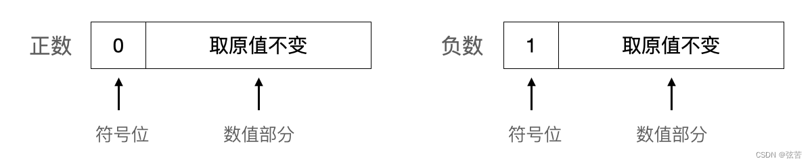
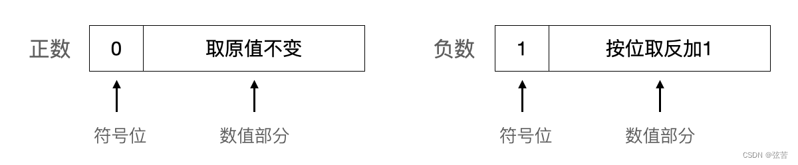
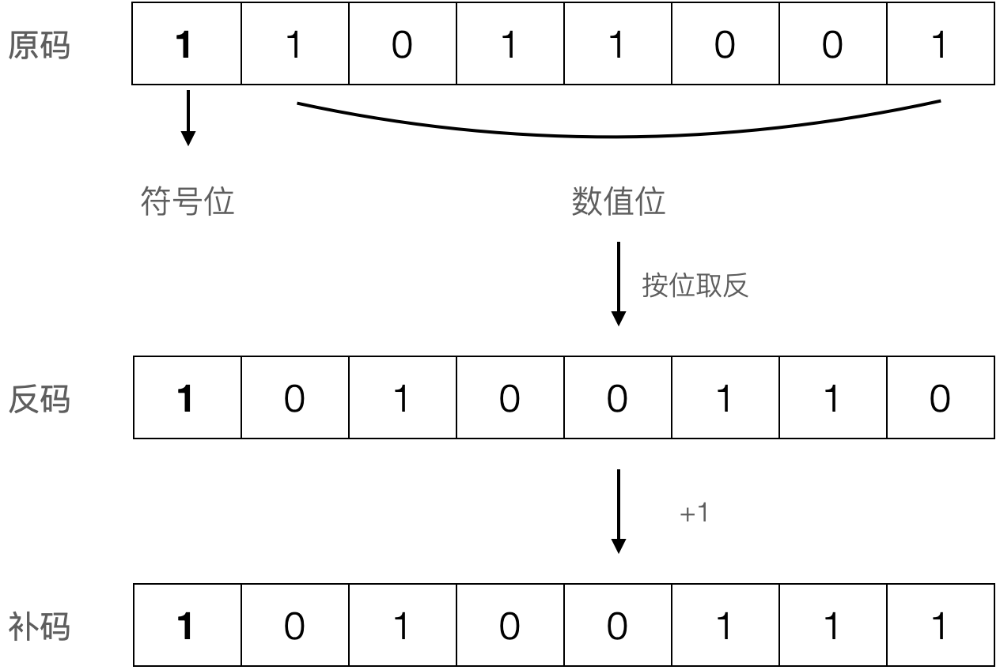
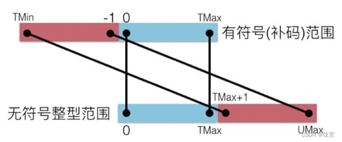

计算机中有符号数的表示
对于无符号整数，一般来说，所有的数位都被用来表示数值。
对于带符号整数，数位被划分为符号位（只能占一位）与数值位（剩余的其它位）。
符号位的权值有不同的解释：
- 权值是零（符号位是“1”则表示数值为负），称为“符号-绝对值”模式（Sign and magnitude）。
- 权值是 –(2N-1-1)，“1的补码”方式（Ones’ complement）。
- 权值是 –2N-1，“2的补码”方式（Two's complement）。
无符号数的编码#
粗略地概括，整数类型分为两大类：无符号整数（unsigned integer）和带符号整数（signed integer）。
- 长短修饰符
short和long用于修饰整形：默认为 long 长整形，短整形需显式指定 short。 - 符号修饰符
signed和unsigned用于修饰字符型和整形：缺省为signed有符号类型，无符号需显式指定unsigned修饰。 - 当用
signed/unsigned、short/long来修饰 int 整形时，int 可省略。
以下是字符型、短整型、整型有无符号的区分表示：
- 有符号字符型：char/signed char；无符号字符型：unsigned char
- 有符号短整型：short [int] /signed short [int]；无符号短整型：unsigned short [int]
- 有符号整型：int /signed [int]；无符号整型：unsigned [int]
相关话题前置参考：
无符号整数编码基于传统的二进制表示法，一般所有的数位都被用来表示数值。
假设有一个整数数据类型有 \(n\) 位。我们可以将位向量写成 \(\vec{x}\) 表示整个向量，或者写成 \([x_{n-1}, x_{n-2}, \cdots, x_0]\)，表示向量中的每一位。把 \(\vec{x}\) 看成一个二进制表示的数，就获得了 \(\vec{x}\) 的无符号表示。在这个二进制编码中，每个位 \(x_i\) 都取值0或1，后一种取值意味着数值 \(2^i\) 应为数字值的一部分。我们用一个函数 \(B2U_n\)（Binary to Unsigned的缩写，长度为\(n\)）来表示。
对位向量 \(\vec{x} = [x_{n-1}, x_{n-2}, \dotsc, x_0]\)：
在这个等式中，等号“\(\dot=\)”表示左边被定义为等于右边。函数 \(B2U_n\) 将一个长度为 \(n\) 的0、1串映射到非负整数。
\(n\) 位所能表示的最小值用位向量\([00\cdots0]\)（全零）表示，也就是整数值0，而最大值是用位向量\([11\cdots1]\)（全1），也就是整数值 \(UMax_n\dot=\sum_{i=0}^{n-1}x_i\ast2^i=2^n-1\)。即\(n\)位二进制位串所能表示的数值范围是 \([0, 2^n-1]\)。
在主流64位LP64架构实现中，unsigned char、unsigned short [int]、unsigned [int]、unsigned long [int]（或 long unsigned [int]）分别占1、2、4、8个字节（8、16、32、64位）。无符号字符（unsigned char）占用1个字节（8位），所能表示的数值范围是 \([0, 2^8-1] = [0, 255]\)，共\(2^8\)=256 个数。
有符号数的编码#
对于很多应用，我们还希望表示负数值。在计算机中，如何表示符号呢？
对于带符号整数，数位被划分为符号位（只能占一位）与数值位（剩余的其它位）。
在计算机中，对于数的符号（正号+和负号-）也只能用0和1这两位数字表示。通常用一个数的最高位作为符号位，最高位为0表示符号位为正；最高位为1表示符号位为负。这样，数的符号标识也“数码化”了。即带符号数的数值和符号统一用二进制数码形式来表示。
在将数的符号用数码（0或1）表示后，数值部分究竟是保留原来的形式，还是按一定的规则做某些变化，这要取决于运算方法的需要，从而有四种常见的机器数形式：原码、反码、补码 和 移码。
为了区别原来的数与它在机器中的表示形式，将一个数（连同符号）在机器中加以数码化后的形式，称为机器数或机器码，而把机器数所代表的实际数值称为真值。
原码（Sign-Magnitude）#
原码表示法比较直观，其数值部分保留其真值（的绝对值）。

例如，正数89的二进制表示为 \(+1011001\)，正号 + 直接用0代替，其机器原码表示为：

负数-89的二进制表示为\(-1011001\)（数值位宽为7），负号 - 直接用1代替，其机器原码表示为：
若符号真值为X，最终机器原码的位向量 \(\vec{x} = [x_{n-1}, x_{n-2} ,\dotsc, x_0]\) 宽度为 \(n\)，除最高符号位 \(x_{n-1}\) 外的数值位宽为 \(n-1\)，则可将原码表示规则用表达式形式定义如下：
- 8位二进制原码表示的数值范围为 11111111-10000000,00000000-01111111，即 -127 - -0,+0 - +127。其中，“0”有-0和+0之分，\([-0]_原=1 0000000\)，\([+0]_原=0 0000000\)。
- \([-89]_原=2^{8-1}-(-89) = 2^7+89 = 0b10000000+0b1011001 = 0b11011001\)。
原码表示法的优点是比较直观、简单易懂，后面在浮点数中有使用到原码编码。
原码的符号位不是数值的一部分，不能直接参与运算，导致加法运算复杂。
为了解决这些矛盾，人们引入了反码和补码。
反码（Ones' Complement）#
对于正数而言，其反码形式与其原码相同：最高位为符号位，用0表示正数，其余位为数值位不变。对于负数而言，其反码表示为：最高位符号位为1，其余数值位在原码的基础上按位取反。反码在机器中的表示形式如下：

-89的二进制表示为 \(-1011001\)，其原码表示为 \(1 1011001\)，则其反码表示为 \(1 0100110\)。
若符号真值为X，最终机器反码的位向量 \(\vec{x} = [x_{n-1}, x_{n-2} ,\dotsc, x_0]\) 宽度为 \(n\)，除最高符号位 \(x_{n-1}\) 外的数值位宽为 \(n-1\)，则可将反码表示规则用表达式形式定义如下：
- 当 X<0 或 X=-0 时，按照无符号数解析位向量，\(\lvert X \rvert + \overrightarrow{[X]_反}=2^n-1\)（n位全1）。例如当n=8时，\(\lvert X \rvert + \overrightarrow{[X]_反}=0b11111111=255\)。\(\overrightarrow{[X]_反}\) 相当于 \(\lvert X \rvert\) 的按位取反（bitwise inversion）= ~\(\lvert X \rvert\)。
- 8位二进制反码表示的数值范围为 10000000-11111111,00000000-01111111（负数数值部分求反复原：11111111-10000000,00000000-01111111），即 -127 - -0,+0 - +127。其中，“0”有-0和+0之分，\([-0]_反=1 1111111\)，\([+0]_反=0 0000000\)。
求-89的8位反码时，无需按照“原码→反码”这个步骤，基于以上表达式即可计算出其反码的无符号真值，其对应的二进制位向量即为-89的反码。
- \([-89]_反=(2^8-1)+(-89) = (2^8-1)-(89) = 166 = 0b10100110\)。
- \([-89]_反\)=~(-89)=166=\(0b10100110\)。
虽然过去生产过基于反码表示的机器，但是几乎所有的现代机器都使用补码形式表示有符号整数。
现在通常已不再单独使用反码，而主要是作为求补码的一个中间步骤来使用。
补码（Two's Complement）#
在计算机中，最常见的有符号（整）数的表示方式是补码。采用补码运算可以将减法变成补码加法运算，在微处理器中只需加法的电路就可以实现加法、减法运算。
概念导读#
为了理解补码的概念，我们先来看看圆周运动的例子。
在现实生活中，一个圆周的可视角度度量为0-2π（或0°-360°），以原点为起点的射线OA逆时针旋转一圈的弧度为2π。
圆周运动具有周期性，即具有“周而复始”的变化规律。假设OA的初始弧度为α，终边OA每绕原点旋转一周，α增加2π弧度（旋转k周后，弧度变成α+k·2π），但OA位置不变。由三角函数的定义可知，终边相同的角的同一三角函数的值相等。
由上面的公式可知，可以把求任意角的三角函数值，转化为求0-2π（或0°-360°）角的三角函数值。射线OA逆时针旋转π和顺时针旋转π（-π）的终边是相同的，逆时针旋转5π/3和顺时针旋转π/3（-π/3）的终边是相同的。以下将负弧度的正弦计算转化到0-2π区间换算：
我们再来进一步看看日常生活中校正时钟的例子。
假定时钟停在7点，而正确时间是5点，要拨准时钟可以有两种不同的拨法：倒拨2个格或顺拨10个格。
想象一下，龟兔在7点钟刻度背向而行，假设兔子的速度是乌龟的5倍，兔子顺时针跑10格，乌龟逆时针跑2格，它们将在5点刻度处迎面相遇。

由于钟面的容量有限，其表盘刻度实际上是十二进制，12h以后又从0开始计数。倒拨2个格，即7-2=5（做减法）；顺拨10个格，即7+10=12+5（做加法）。而钟面上12=0，故12+5回归到刻度5。这就表明，在舍掉进位的情况下，“从7减去2”和“往7加上10”所得的结果是一样的。在十二进制下，12+5丢失进位12，此处12是溢出量，又称为模（mod）。而-2和10的绝对值之和恰好等于模数12，我们把10称为-2对于模数12的补数。在圆周运动中，每转动一周的 \(2\pi\) 弧度可视为溢出量（模），\(\frac{5\pi}{3}\) 为 \(-\frac{\pi}{3}\) 对于模数 \(2\pi\) 的补数。
在电脑和手机的日期和时间偏好设置中，通常可以设置显示24小时，因为地球自转一圈是一天（接近24h）。24h制的01点和13点（下午1点）都对应12h制钟表盘上的1点位：\(1 \equiv 13 \mod 12\)。“天天向上”、“日复一日”中的“天”和“日”即为溢出量，每过24h（模）又将开启崭新的一天。假设现在是今天0点，则32h后就是明天上午8点：\(8 \equiv 32 \mod 24\)。
计算机中的运算受一定字长的限制，它的运算部件、寄存器和存储单元都有一定的位数，因而在运算过程中也会产生溢出量，所产生的溢出量实际上就是模。可见，计算机的运算也是一种有模运算。
编码格式#
对于正数而言，其补码形式与其原码、反码相同：最高位为符号位，用0表示正数，其余位为数值位不变。对于负数而言，其补码表示为：最高位符号位为1，其余数值位在原码的基础上按位取反并加1（反码+1）。补码在机器中的表示形式如下：

-89的二进制表示为 \(-1011001\)，其原码表示为 \(1 1011001\)，其反码表示为 \(1 0100110\)，则其补码表示为 \(1 0100111\)。

若符号真值为X，最终机器补码的位向量 \(\vec{x} = [x_{n-1}, x_{n-2} ,\dotsc, x_0]\) 宽度为 \(n\)，除最高符号位 \(x_{n-1}\) 外的数值位宽为 \(n-1\)，则可将反码表示规则用表达式形式定义如下：
- 当 X<0 时，按照无符号数解析位向量，\(\lvert X \rvert+\overrightarrow{[X]_补}=2^n\)（相对反码加1）。例如当n=8时，\(\lvert X \rvert+\overrightarrow{[X]_补}=2^8=256\)。8位全1（0b11111111）时，能表示最大无符号数 \(2^8-1\) 或最大有符号数(\(-1\))，再加1则会超出8位所能表示的最大值，变成9位二进制0b100000000，高位截断溢出为0b00000000，即超过256从零开始计数（\(0 \equiv 256 \mod 256\)）。
- 8位二进制补码表示的数值范围为 10000000-11111111,00000000-01111111，即 -128 - -1,+0 - +127。其中，无-0和+0之分，保证了0的唯一性。另外，取值范围为连贯区间 [-128, 127]，包含128个负数、128个非负数。负数、非负数各占一半，负数比正数多一个。
设想一个有256个刻度的大笨钟，当采用补码重新编码刻度后，表盘的256个刻度被重新编码，划分成右边顺时针半盘[0,127]和左边逆时针半盘[-128,-1]。

-89的二进制补码表示为 \(1 0100111\)，按照无符号数解析位向量的值为167，满足：
求-89的8位补码时，无需按照“原码→反码→+1”这个步骤，可基于以上表达式计算其补数：
- \([-89]_补=2^8+(-89) = 2^8-89 = 167 \implies -89 \mod 256 = 256+(-89) \equiv 167\)
负数-89对应的无符号补数167的二进制位向量 0b10100111，即为其补码。
按权展开#
-89的二进制表示为 \(-1011001\)，其原码表示为 \(1 1011001\)，其反码表示为 \(1 0100110\)，其补码表示为 \(1 0100111\)。
\(\lvert -89 \rvert\) 的二进制位向量为 \(01011001\)：
- 不考虑最高符号位，根据反码的定义，反码数值部分位向量=
- 不考虑最高符号位，补码数值部分位向量=
补码高位符号位占1位，其余数值部分占 n-1 位。当将最高符号位解释为负权（\(-2^{n-1}\)）时，整体位向量的真值即为原始负值：
我们用一个函数 \(B2T_n\)（Binary to Two's Complement 的缩写，长度为\(n\)）来表示位向量 \(\vec{x} = [x_{n-1}, x_{n-2} , \dotsc, x_0]\) 到补码的编码映射：
最高有效位 \(x_{n-1}\) 称为符号位，它的“权重”为 \(-2^{n-1}\)，是无符号表示中权重的负数。符号位被设置为1时，表示值为负，而当设置为0时，值为非负。
\(\lvert -89 \rvert\) 的二进制位向量为 \(01011001\)，-89的二进制补码表示为 \(1 0100111\)，可基于 \(B2T_n\) 函数按权展开复原补码的真值：
让我们基于 \(B2T_n\) 展开式，重新推导一下 \(n\) 位补码所能表示的取值范围。
- 最小值是位向量 \([10\cdots0]\)，只设置负权，其他正权位清零，此种情形负得最多，其整数值为 \(TMin_{n}\dot=-2^{n-1}\)。
- 当设置了负权时，设置其他所有正权位，位向量为 \([11\cdots1]\)。此种情形正权打满（负得最少），其整数值为 \(-2^{n-1}+\sum_{i=0}^{n-2}x_i\ast2^i=-2^{n-1}+(2^{n-1}-1)=-1\)，即最大负整数。
- 最大值是位向量 \([01\cdots1]\)，清除负权（即为非负数），清除其他所有正权位，其值为0；若设置其他所有正权位，其整数值为 \(TMax_{n}\dot=\sum_{i=0}^{n-2}x_i\ast2^i=2^{n-1}-1\)。
以\(n=8\)为例，一个字节（byte）的补码编码所能表示数值范围是 \([-2^{8-1}, 2^{8-1}-1]\)，即 \([-128, 127]\)，包含128个负数（-128 - -1）、128个非负数（0 - 127）。
补码加法#
我们在初中时代学习初等代数时，就引入负数这一重要的概念用来表示“相反意义的量”。有了负数的概念后，减法也可以理解为加法：减去一个正数的等效表述是加了一个负数。
回想调拨钟表的例子，定义顺时针为正（加法），逆时针为负（减法）。假设初始刻度为x，减量为n（n>0），加量为其补数 (12-n)，显然有 \(x-n \equiv x+(12-n) \mod 12\)。令 n=2，在 mod12 的钟表盘上，逆时针回拨2格等效于顺时针拨动10格，殊途同归。
计算机的表示法使用有限数量的位对一个数字编码，当结果太大以至不能表示时，某些运算就
会溢出（overflow）。因此，我们说计算机运算也是一种有模运算。当然，在计算机中不是像上述时钟例子那样以12为模，在定点小数的补码表示中是以 \(2\) 为模，在定点整数中则以 \(2^n\) 为模（n=8,16,32,64,...）。
在计算机中，在字宽容量（模数）范围内，负数的补码表示是对数值位（或绝对值）取反+1，“取反”实际上已经暗含了减法，“+1” 则将补码进一步换算成了补数。假设 X<0，其补码位向量的无符号值 \(\overrightarrow{[X]_补} = 2^n- \lvert X \rvert\)，实际上就是\(\mod 2^n\)。当 n=8 时, 就是\(\mod 256\)。
类比钟表调拨，减去正数可视作加上负数的补码。这样，在计算机中就不用单独设置减法器，而是基于补码一律按加法运算规则实现减法的等效计算。在这一过程中，操作数和运算结果都统一用补码表示。
另一方面，补码的最高符号位统一按照负权解释，即补码的符号位可视作整体数值的一部分。从这个角度来讲，符号位直接参与运算貌似也是解释得通。
【例1】已知X=+0000111（7），Y=-0010011（-19），求两数的补码之和。
- \([X]_补=0 0000111，[Y]_补=1 1101101\)，人工计算 Z=X+Y=7+(-19)=-12（补码为11110100）。
若将 \(\overrightarrow{[Y]_补}\) 也视作无符号数=237，将计算结果Z也视为无符号数\(\overrightarrow{[Z]_补}\)=244，满足 7+237=244，而 \(244 \equiv -12 \mod 256\)。
还是借用256大笨钟来阐述，初始在刻度7点处，逆时针回拨19格和顺时针拨动237格，效果都是拨到刻度244处。当采用补码重新编码刻度后，原先的244点映射为左半盘的-12点位。换个角度来说，由于 \(\lvert -19 \rvert \gt \lvert 7 \rvert\)，这里异号相加，负数占主导，也可以想象为初始刻度在左半盘-19点，+7表示顺时针拨动7格，将拨到-12点，仍然在左半盘（没有溢出）。
补码可以视作无符号数直接参与竖式按位加计算，接下来重点看看补码加法的溢出问题、判断及处理。
【例2】已知X=+1000000（64），Y=+1000001（65），求两数的补码之和。
- 直接对补码列竖式计算如下：
- 两个正数相加，结果为负数！？补码之和是129，超出了 [0, 127]，即产生了溢出现象。此时，数值部分向符号位产生进位\(C_0=1\)，符号位未向高位产生进位 \(C_f=0\)。
这里两个正数相加，结果超出了8位补码的非负数表示范围。竖式计算的结果为二进制位向量 10000001，无符号数值是 129，补码表示的真值为-127。
\(C_0=1\) 表示有溢出，符号位从正变成负。
还是借用256大笨钟来阐述，初始在刻度65点处，顺时针拨动64格后将到129点。但是，当采用补码表示时，129点越过右半盘（取值范围为[0,127]）的分界线127点两格，对应左半盘（取值范围为[-128,-1]）的-127点位：+127左溢一格是-128，再左溢一格是-127。

用以下C语言代码测试验证，计算结果Z的位向量为0x81（即无符号数129），补码对应的真值=\(-127 \equiv 129 \mod 256\)。
signed char X = 64;
signed char Y = 65;
signed char Z = X+Y;
printf("Z=0x%hhx, %hhd\n", Z, Z);
【例3】已知X=-1111111（-127），Y=-0000010（-2），要求进行补码的加法运算。
- 直接对补码列竖式计算如下：
- 两个负数相加，结果为正数！？预期的结果-129超出了8位补码所能表示的负数范围 [-128, -1]，即产生了溢出现象。此时，数值部分向符号位未产生进位 \(C_0=0\)，符号位向高位产生进位 \(C_f=1\)。
这里两个负数相加，结果超出了8位补码的负数表示范围，溢出到了正数区。竖式计算的结果为二进制位向量 01111111，无符号数值即其补码真值为127。
\(C_f=1\) 表示有溢出，符号位从负变成正。
由于 \(\lvert -127 \rvert \gt \lvert -2 \rvert\)，这里的负负相加，-127占主导。还是借用256大笨钟来阐述，当采用补码重新编码刻度后，想象初始刻度左半盘-127点处，-2表示逆时针拨动2格，越过左半盘分界线-128点一格，对应右半盘（取值范围为[0,127]）的127点位：-127右溢一格是-128，再右溢一格是+127。
用以下C语言代码测试验证，计算结果Z的位向量为0x7f，补码对应的真值是127（383溢除模256）。
signed char X = -127;
signed char Y = -2;
signed char Z = X+Y;
printf("Z=0x%hhx, %hhd\n", Z, Z);
【例4】已知X=-0000011（-3），Y=-0000010（-2），要求进行补码的加法运算。
- 直接对补码列竖式计算如下：
- 直接补码运算产生的结果的无符号数值是251，正是预期结果-5的补码！此时，数值部分向符号位产生进位 \(C_0=1\)，符号位向高位产生进位 \(C_f=1\)。
直观判断，两个小负数相加不会溢出。从单个溢出位判断：
- 两个负数相加，总会导致 \(C_f=1\)，符号位从负变成正。
- 然后 \(C_0=1\)，符号位又从正变成负。
所以，整体上，符号位还是保持为负，即没有溢出。
下面来从数理角度来具体推导一下溢出判断逻辑。
溢出判断#
下面基于8位补码，根据符号的异同性，详细讨论上面四个例子对应的符号组合（+、-、+、+、-、-）时补码加法的溢出条件及判断逻辑。
s1、s2 为补码最高符号位，取值0或1。
x、y 分别为 X、Y 除符号位的其他数值位的真值。
【例1】一正一负：假设 s1=1,s2=0, 按权展开相加 \(B2T_8(X)+B2T_8(Y) = (-2^7+x)+y = -2^7+(x+y)\)
- 结果 Z 的对应区间为 [-128, 126]，不会产生溢出。
- 另外，s1+s2=1，当 \(C_0=0\) 时，\(C_f=0\)；当 \(C_0=1\) 时，\(C_f=1\)。
【例2】两个正数：s1=s2=0，按权展开相加 B2T_8(X)+B2T_8(Y) = x+y
- 结果 Z 的对应区间为 [0, 254] = [0,127]+[128,254]，当结果落入 [128,254] 时，有符号补码真值溢出为负值：\(Z \mod 256 \equiv Z-256\) 对应区间 [-128, -2]。
-
另外，s1+s2=0，我们来看看进位情况：
- 当 x+y 小于或等于最大正数127（0b11111111）时，无溢出，此时 \(C_0=0\)，\(C_f=0\)。
- 当 x+y 大于最大正数127（0b11111111）时，溢出为负，此时 \(C_0=1\)，\(C_f=0\)。
【例3】两个负数，s1=s2=1，按权展开相加 \(B2T_8(X)+B2T_8(Y) = (-2^7+x)+(-2^7+y) = -2^8+(x+y)\)
- 结果 Z 的对应区间为 [-256, -2] = [-256,-129]+[-128,-2]，当结果落入 [-256,-129] 时，有符号补码真值溢出为正值：\(Z \mod 256 \equiv Z+256\) 对应区间 [0, 127]。
-
另外，s1+s2=0（\(C_f=1\)），我们来看看进位情况：
- 当数值部分和（x+y）小于等于127（小于128）时，\(Z \le -128\)，溢出为正，此时 \(C_0=0\)。
- 当数值部分和（x+y）大于127（大于等于128）时，\(Z \gt -128\)，无溢出，此时 \(C_0=1\)。
以上例1和例4中，8位正数之和、8位负数之和未超出8位补码表示的数值范围时，没有产生溢出，结果正确。此时，满足 \(C_0=C_f\)，同时为0或同时为1。
以上例2和例3中，8位正数之和、8位负数之和超出8位补码表示的数值范围时，产生了溢出，结果错误。此时，满足 \(C_0 \ne C_f\)，一个为0且一个为1。
综合以上，可用逻辑异或表达式 \(\boxed{OF = C_f \oplus C_0}\) 来检验补码加法的溢出情况。
扩展一个数字的位表示#
一个常见的运算是在不同字长的整数之间转换，同时又保持数值不变。考虑从一个较小的数据类型转换到一个较大的类型，即扩大位宽。
要将一个无符号数转换成一个更大的数据类型时，只要简单地在开头添加0。具体来说，原数值的字节保持在低（权）位不变，在新增的高（权）位补0。
要将一个补码数字转换为一个更大的数据类型，可以执行一个符号扩展（sign extension）。具体来说，原数值的字节保持在低（权）位不变，在新增的高（权）位复制符号位。
- 对于正数，高位复制符号位0，不影响其真值。
- 对于负数，高位复制符号位1，也不影响真值。
考虑负数的补码位向量 \(\vec{x} = [x_{n-1}, x_{n-2} ,\dotsc, x_0]\)，其编码映射如下：
当复制高符号位 \(x_{n-1}\) 时，位向量 \(\vec{x'} = [{ \underline{x_{n-1} ,\dotsc, x_{n-1}} }, x_{n-1}, x_{n-2} ,\dotsc, x_0]\)，则有 \(B2T_n(\vec{x}) = B2T_{n'}(\vec{x'})\)。
以-89为例，其8位补码位向量为\([1 0100111]\)，将其符号扩展为16位的位向量位\([{ 11111111 } 10100111]\)：
设补码除符号位后的位数值为v，则
更进一步有：
对比可知，符号扩展前后的补码所表示的真值不变。
有符号数和无符号数之间的转换#
C语言允许在各种不同的数据类型之间做强制类型转换。例如，假设变量x声明为int，u声明为unsigned。表达式 (unsigned)x 会将x的值转换为一个无符号数值，而 (int)u 将u的值转换为一个有符号整数。
考虑以下代码：
short int v = -12345;
unsigned short uv = (unsigned short)v;
printf("v=%hd, uv=%hu\n", v, uv);
printf("v=0x%hx, uv=0x%hx\n", v, uv);
在一台采用补码的机器上，上述代码运行输出：
可以看到，强制类型转换的结果保持位向量（位模组）不变，只是改变了解释这些位的方式。
v=-12345 的补码表示和 uv=53191 的无符号表示是完全一样的。
以上代码片段示例演示了负数补码转换成无符号数。对于负数，补码中最高位作为符号位，本来解释为负权 \(-2^{n-1}\)，按照无符号解释为正权数值位 \(2^{n-1}\)。由于后面位的数值 \(v\) 保持不变，相当于在补码表示的真值基础上加上 \(2^n\)。
对满足 \(TMin_n \le x \le TMax_n\) 的 \(x\) 有：
简单推导如下：
例如：\(T2U_{16}(-12345) = -12345+2^{16}=53191\)。
同理，无符号数的最高位解释为正权数值位 \(2^{n-1}\)，当将其位向量解释成补码时，最高位将作为符号位，解释为负权 \(-2^{n-1}\)。由于后面位的数值 \(v\) 保持不变，相当于在无符号真值基础上减去 \(2^n\)。
对满足 \(0 \le u \le UMax_n\) 的 \(u\) 有：
对于 \(n=8\)，当 \(u \le TMax_n = 127\) 时，即 \(0 \le u \le 127\)，刚好落入8位补码所能表示的非负数区间 ；当 \(u \gt TMax_n = 127\) 时，例如 \(128 \le u \le 255\)，则原始高位1变成负号，补码释义为负数。原来位向量按无符号解释出的真值需减去 \(2^8=256\)，换算出按补码解释的正确真值，对应负数区间 \([-1, -128]\)。
在数轴上把有符号数和无符号数画出来的话，就能很清晰的看出相对的关系：

signed arithmetic overflow#
C Basic Types - Binary Representions:
TAKEAWAY 5.49 The same value may have different binary representations.
The following two functions are basically all that is needed to interpret unsigned values as signed values:
| is_signed_less.c | |
|---|---|
下面的代码试图从大到小打印 [0，99] 区间内的所有整数，请思考可能存在的问题。
以下是《C语言深度解剖（第2版）》附录中的 C 语言基础测试题5，请思考输出结果。
#include <stdio.h>
#include <string.h>
int main(int argc, char* arg[]) {
signed char a[1000];
int i;
for (i = 0; i<1000; i++)
a[i] = -1-i;
printf("%lu", strlen((const char*)a));
return 0;
}
C Basic Types - Binary Representions:
TAKEAWAY 5.50 Unsigned arithmetic wraps nicely.
/*incremented up to UINT_MAX and then wraps around to 0*/
for (unsigned i = 1; i; ++i) do_something();
TAKEAWAY 5.57 Signed arithmetic may trap badly.
Where unsigned values are forced to wrap around, the behavior of a signed overflow is undefined.
The as-if Rule (takeaway 5.8) allows it to optimize the second loop to an while(true) infinite loop.
TAKEAWAY 5.56 It is your responsibility to avoid undefined behavior of all operations.
ISO/IEC-N4950 - 6.8.2 Fundamental types
signed arithmetic overflow
Unsigned arithmetic does not overflow. Overflow for signed arithmetic yields undefined behavior (7.1).
参考#
《深入理解计算机系统》（第3版）
《计算机组成原理》（第3版），唐朔飞
《微机原理与接口技术》（第2版），王克义
《汇编语言程序设计》（第4版），文全刚
深入谈谈二进制
补码表示法的本质原理
【读薄 CSAPP】壹 数据表示
从晶体管开始聊聊计算机为什么采用二进制